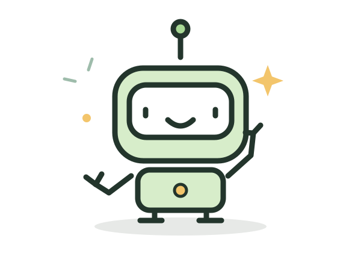

Ask “what if?”
You don’t have to know the answer before you try.
Meet Titanbotics
We like building things, asking questions, and seeing what happens when we try something new.
We’re students from Stratford Elementary School and Santa Teresa Elementary School. Together, we’re a FIRST LEGO League team.
FIRST LEGO League gives us a robot challenge and a real-world problem to explore. We build, code, share ideas, and learn how to listen to each other.
Our lineup can change from season to season. Each season page keeps its own team story.
Meet our 2025–26 UNEARTHED team →
Our team reminders
You don’t have to know the answer before you try.
Listen to each other. Share the pieces, the keyboard, and the credit.
Help others and treat people with respect, even when you’re competing. FIRST calls this Gracious Professionalism.